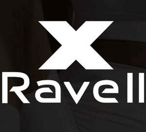

Trade Mark Journal No.2026/007 13 February 2026
UK00004299309 23 November 2025 (18,25,35)

- Class 18
- Bags for sports clothing; Gym bags; Bags for clothes; Holdalls for sports clothing.
- Class 25
- Clothes; Gym shorts; Gym suits; Gym boots; Beach clothes; Clothes for sports; Clothes for sport; Jogging sets [clothing]; Clothing for gymnastics; Work clothes; Baby clothes; Jogging bottoms [clothing]; Swaddling clothes; Clothing for leisure wear; Beach clothing; Jogging outfits; Clothing; Athletic clothing; Triathlon clothing; Clothing for wear in wrestling games; Shorts [clothing]; Clothing for wear in judo practices; Dance clothing; Yoga shoes; Leisure clothing; Golf clothing, other than gloves; Clothing for cycling; Headbands [clothing]; Headbands for clothing; Clothing for sports; Sports clothing; Gloves [clothing]; Gloves as clothing; Trunks being clothing; Babies' pants [clothing]; Sports clothing [other than golf gloves]; Jogging shoes; Denims [clothing]; Jackets being sports clothing; Jackets (Stuff -) [clothing]; Stuff jackets [clothing]; Jogging pants; Jerseys [clothing]; Yoga shirts; Bodies [clothing]; Clothing for skiing; Mitts [clothing]; Bottoms [clothing]; Gussets for underwear [parts of clothing]; Drawers [clothing]; Drawers as clothing; Jackets [clothing]; Beach shoes; Gymnastic shoes; Underwear; Boxing shoes; Aprons [clothing]; Gussets for bathing suits [parts of clothing]; Linen clothing; Tennis wear; Tops [clothing]; Wristbands [clothing]; Belts [clothing]; Belts for clothing; Casual clothing; Dress shoes; Shoes for leisurewear; Yoga pants; Maternity clothing; Ready-to-wear clothing; Knitwear [clothing]; Men's clothing; Leather clothing; Clothing of leather; Waterproof clothing; Parts of clothing, footwear and headgear; Rainproof clothing; Hoods [clothing]; Clothing for cyclists; Sports garments.
- Class 35
- Retail services connected with the sale of clothing and clothing accessories.
Ravell LTD